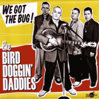

the Bird Doggin' Daddies - We Got The Bug! (Album, 2013)
01 - We're Gonna Rock It (1:59)
02 - Better Be Gone (1:51)
03 - Crazy, Crazy Lovin' (2:12)
04 - Headin' South (2:24)
05 - Do The Bop Bop Bop (2:09)
06 - Let's Go Crazy (2:05)
07 - Crossbone Jim (Mystery Lane) (3:19)
08 - Bird Dog (2:19)
09 - I Ruined My Suit (2:00)
10 - Daddy-O-Rock (2:03)
11 - Lonely Blue Boy (2:16)
12 - Morse Code (2:20)
13 - Let's Go For A Ride (2:05)
14 - I Got The Bug (1:42)
15 - Too Much Lovin' (Going On) (2:28)
16 - Lil' Pretty Miss (2:32)
17 - Sugar Coated Love (3:01)
18 - I Ruined My Suit (alt.) (1:32)
© Rhythm Bomb Records :: [5747]
Notes
Review
058/366 (Project 366)
Authentic way of Rockabilly rockin' and rollin' thrillers.